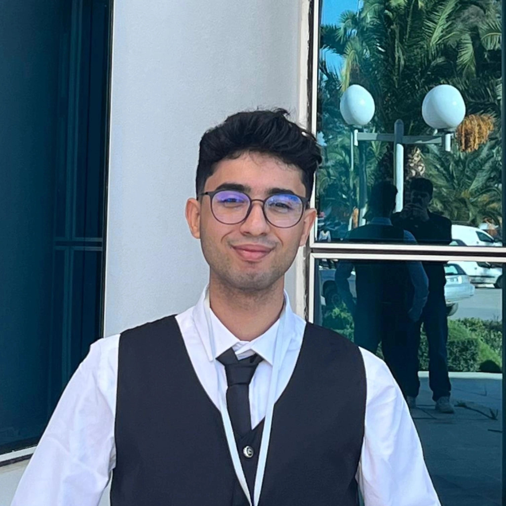

ICT Engineering student at SUP'COM passionate about Machine Learning & Problem Solving.
View my projectsI'm a first-year ICT Engineering student at SUP'COM with a solid foundation in networking and a strong interest in competitive programming and machine learning. I enjoy solving CP problems and exploring how data analysis works. I'm highly motivated to learn, contribute to impactful projects, and grow within dynamic and collaborative teams.
ICT Engineering Student - Telecommunications.
Prep-Engineering Studies in Physics and Technology.
🏆 CCNA1 - Introduction to Networks
🏆 Core Signal Processing Techniques in MATLAB
🏆 Team SUP'COM Certification
Designed and developed a responsive web-based digital twin for telecom networks. It allows users to dynamically build network topologies, simulate hardware/node failures in real-time using bidirectional WebSockets, and instantly compute the optimal shortest paths using routing algorithms (OSPF simulation / Dijkstra engine).
Stack: FastAPI, React, ReactFlow, TypeScript, WebSockets, SQLite.
View ProjectAutonomous application capable of analyzing chest X-rays to detect signs of pneumonia using Convolutional Neural Networks (CNN). A great example of AI applied to healthcare.
View ProjectDesigned and developed a responsive, visually appealing website dedicated to a flower shop or botanical showcase. Focused on modern UI/UX principles, smooth navigation, and a clean layout using HTML, CSS, and modern web design techniques.
View ProjectCollaborated with the Preparatory Institute for Scientific and Technical Studies (IPEST). Aimed to improve student mental health and break down stigmas through interactive awareness campaigns, peer collaboration, and access to professional and digital support resources.
Developed a database platform for MedConnect, a smart hospital providing patients with seamless consultation, diagnostics, and continuous medical follow-up (MCD & MLD Design and SQL).